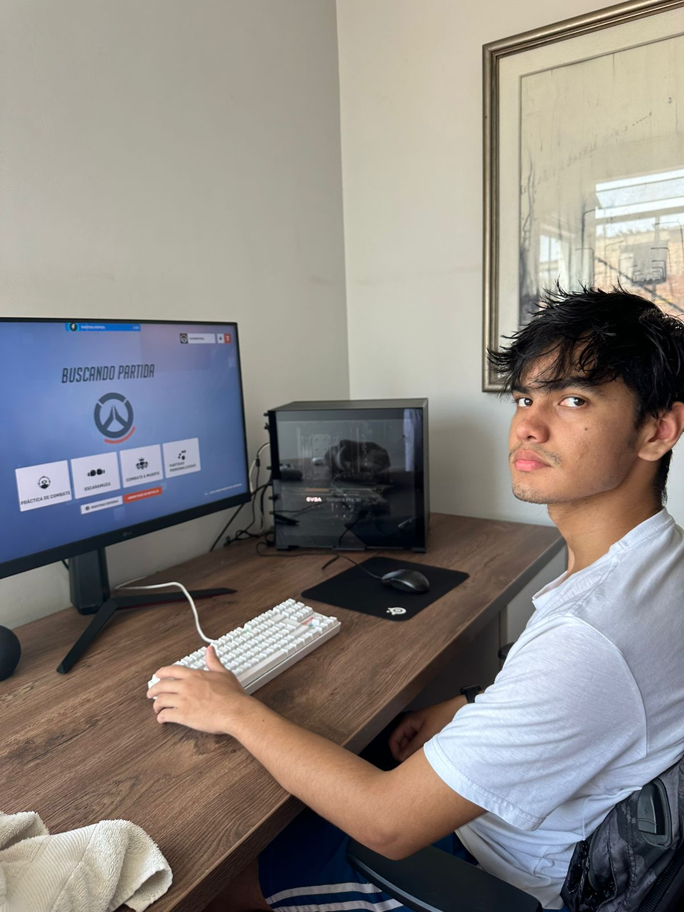
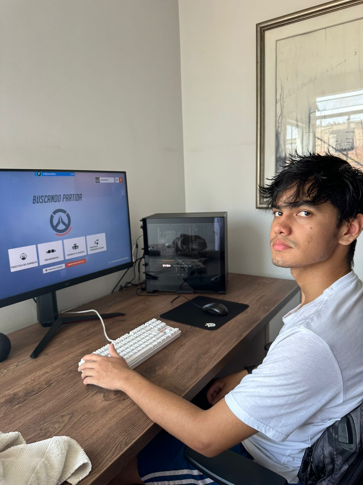
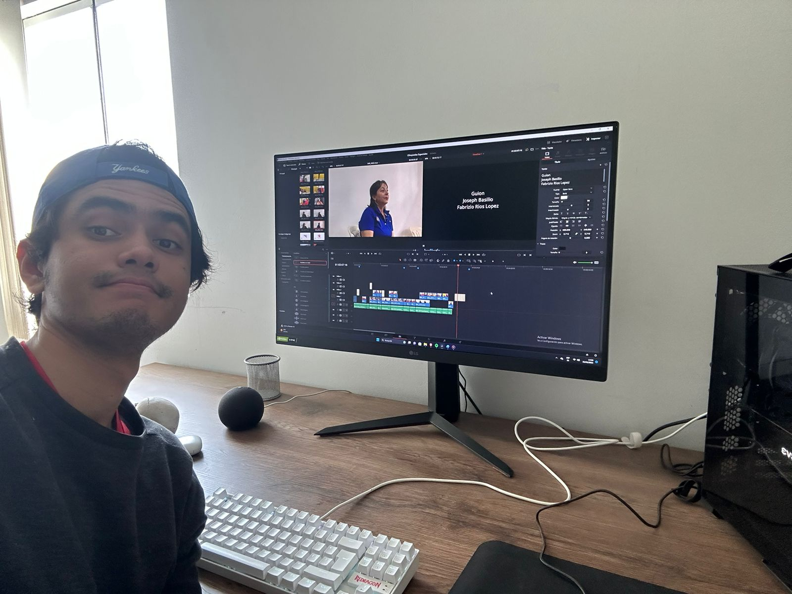
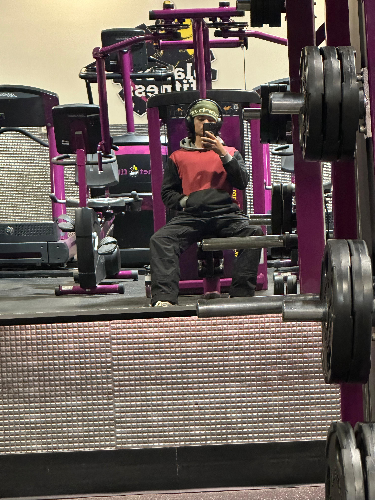
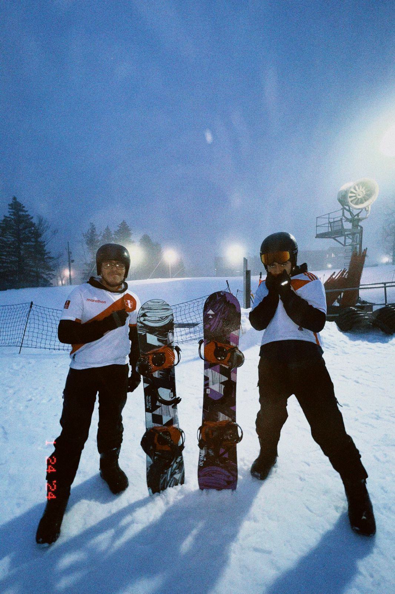
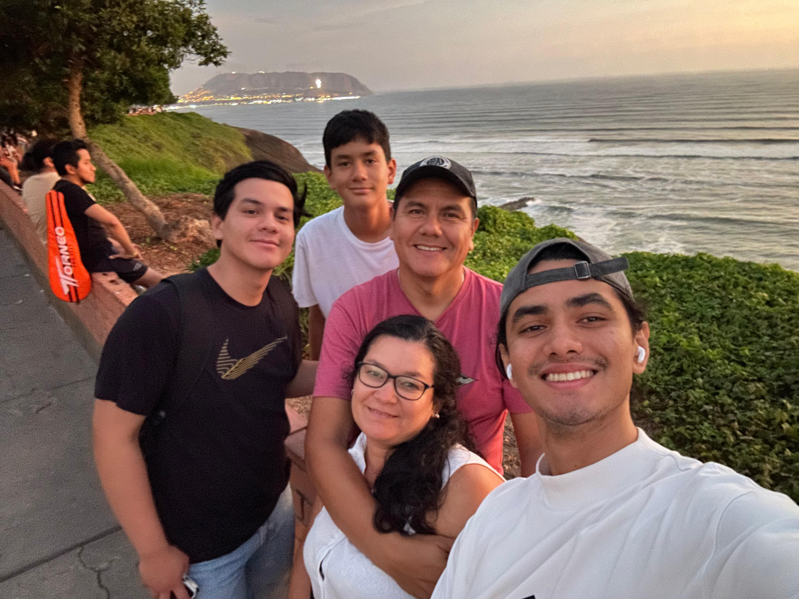
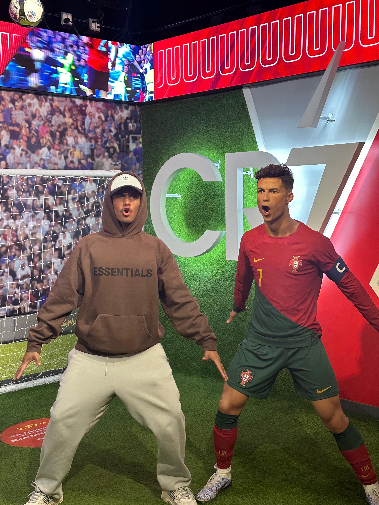

Mi padre fue quien me adentró a los videojuegos por primera vez, cuando me regaló mi primera consola: La PlayStation 2. La cual disfrute un montón junto a mis hermanos y primos. Y desde entonces son Sony Lover.

Siempre fui un consumidor de redes sociales y gracias al algoritmo me fui interesando en trucos de ediciones y montajes. Soy muy apegado a la música por lo que me interesaba como se hacian los videoclips y las peliculas. Es asi como me interesé por la carrera.

El deporte y la actividad física desde pequeño siempre fue y es una parte importante en mi vida. Crecí viendo y jugando futbol y eso me llevo a formar amistades que atezoro hasta ahora. Interesarme mas por el deporte me llevó a conocer otras disciplinas como el gymnasio, basketball, artes marciales y boxeo.

Siempre busco descubrir cosas nuevas que me aporten como persona y profesional. Me encanta viajar a otros paises y estoy en constante busqueda de otras culturas. Cada dia busco superarme y ser la mejor versión de mi.

No puedo estar más agradecido por la familia que tengo. Crecí junto a mi hermano y todos mis primos, casi todos de la misma edad, lo cual hizo que entre todos formaramos un lazo de hermandad y siempre nos apoyemos en todo. Mis padres siempre me apoyan en todas mis decisiones y buscan lo mejor de mi y de mis hermanos. Gracias a la vida por darme a mi familia.

Deporte: Cristiano Ronaldo, Israel Adesanya, Kobe Bryant, Michael Jordan, Paolo Guerrero.
Música: Kanye West, Justin Bieber, Drake, Kendrick Lamar, Chris Brown.